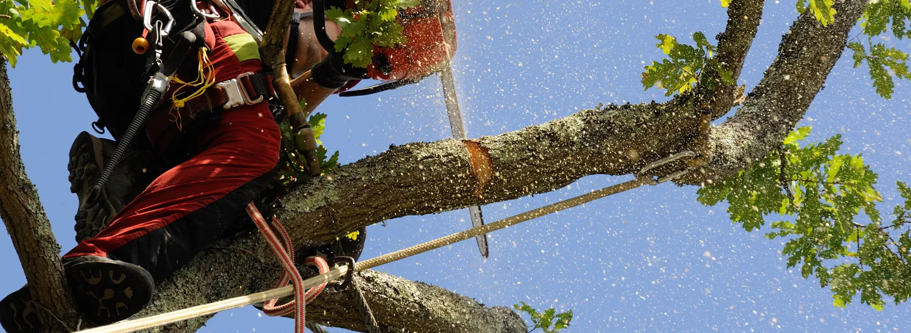
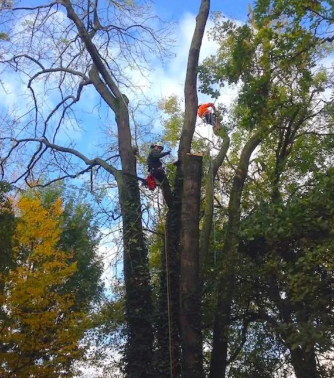

Élagage d’arbres à Lambersart et alentour
Élagage d’arbres à Lambersart
Un arbre bien élagué est plus sain, plus sûr et plus beau. Le Ch’ti Élagueur intervient sur tous les arbres de votre jardin : branches mortes, ramure trop dense, branches qui touchent la toiture, la façade ou les fils. Nous travaillons en hauteur, proprement, et nous repartons avec les déchets verts.
Notre savoir-faire
Pourquoi faire élaguer vos arbres ?
L’élagage retire le bois mort et les branches fragiles avant qu’elles ne tombent. Il laisse passer la lumière, limite la prise au vent et évite les ennuis avec la gouttière, la ligne électrique ou le voisin. Bien fait, il prolonge la vie de l’arbre au lieu de l’affaiblir.

Une coupe adaptée à chaque arbre
Chaque essence réagit différemment à la coupe. Nous coupons au bon endroit, sans arracher l’écorce, et nous ne retirons que le nécessaire : une éclaircie pour aérer, une réduction pour contenir un arbre devenu trop grand, ou la suppression des branches dangereuses.
Le bon moment pour élaguer
La plupart des arbres s’élaguent pendant leur repos, de la fin de l’automne à la fin de l’hiver. Une branche morte ou cassée, elle, se retire à tout moment de l’année. Nous vous indiquons la meilleure période au moment du devis.

Un chantier propre, du début à la fin
Les branches coupées sont descendues avec soin pour protéger vos plantations, votre toiture et votre clôture. À la fin, tout est ramassé et les déchets verts sont évacués : vous retrouvez un jardin net.
Votre devis, gratuit
Décrivez-nous vos arbres par téléphone au 06 04 43 98 99 ou avec le formulaire. Nous venons voir le chantier et nous vous remettons un devis clair, gratuit et sans engagement. Nous intervenons à Lambersart, dans la métropole lilloise et dans tout le Nord et le Pas-de-Calais.
Demander un devis gratuit